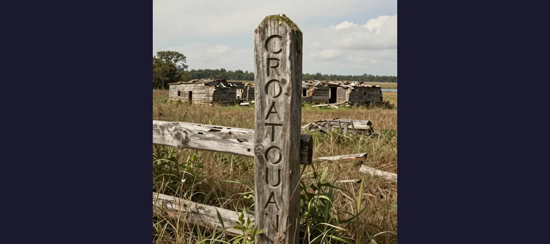
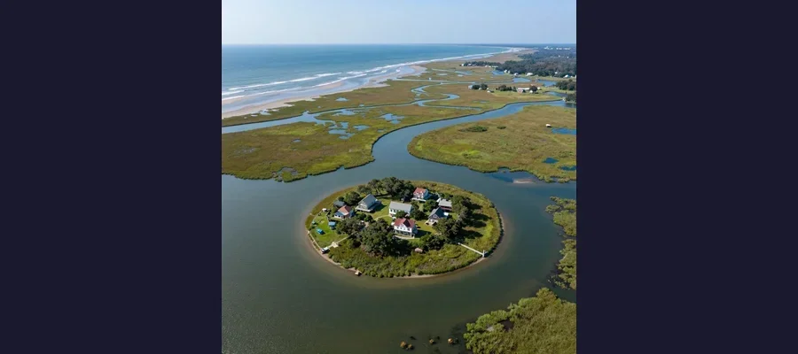

The Lost Colony of Roanoke: America's Oldest Unsolved Mystery and the Word Carved in Wood

Roanoke Island, where 117 English settlers vanished between 1587 and 1590, leaving behind only a carved word and a mystery that endures.
In August 1590, an English governor named John White stepped off a ship onto the sandy shores of Roanoke Island in present-day North Carolina, expecting to find his daughter, his granddaughter, and the 115 other English colonists he had left behind three years earlier. He found nothing. The settlement was deserted. The houses had been dismantled. There were no bodies, no signs of violence, no evidence of a struggle. The only clues were two carvings: the word "CROATOAN" etched into a wooden post at the entrance to the palisade, and the letters "CRO" carved into a nearby tree. White knew what CROATOAN meant — it was the name of a nearby island, home to Manteo, a Croatan chief who had befriended the English. It was also the prearranged signal: if the colonists had to abandon the settlement, they would carve their destination into a tree. But before White could mount a search of Croatoan Island, a fierce storm forced his ships back to sea. He never returned. The fate of the Lost Colony of Roanoke — 117 men, women, and children who vanished from the edge of the known world — has remained unsolved for more than four centuries. It is America's oldest cold case, and despite modern archaeology, genetic testing, and satellite imagery, we still do not know with certainty what happened to them.
The story of the Lost Colony is not just a mystery. It is the founding myth of English America — a tale of ambition, hubris, bad luck, and the brutal realities of colonization in the sixteenth century. It involves Sir Walter Raleigh's dream of a New World empire, the first English child born on American soil, a devastating war with Spain that stranded the colonists without supplies for three years, and a single carved word that has launched a thousand theories. It is a story that has drawn in archaeologists, geneticists, historians, and amateur sleuths for generations, each hoping to be the one who finally solves the puzzle. The latest research — including the discovery of a hidden symbol on a sixteenth-century map and DNA analysis of potential descendants — has brought us closer than ever to an answer. But "closer than ever" is not the same as "certain," and the Lost Colony continues to guard its secrets with the same stubborn silence that greeted John White on that August day in 1590.
Raleigh's Gamble: England's First Attempt to Colonize America
The Roanoke venture was the brainchild of Sir Walter Raleigh, the charismatic courtier, explorer, and favorite of Queen Elizabeth I. In 1584, Raleigh received a royal patent authorizing him to establish a colony in North America, and he wasted no time. He dispatched a reconnaissance expedition under Philip Amadas and Arthur Barlowe, who explored the Outer Banks region of what is now North Carolina and returned with glowing reports of a lush, fertile land inhabited by friendly Native Americans. Elizabeth was so pleased that she named the entire region "Virginia" in honor of her virgin status.
The first actual colonization attempt came in 1585, when Raleigh sent approximately 108 men to Roanoke Island under the command of Ralph Lane. The colony was a disaster from the start. The settlers were largely soldiers, not farmers, and they arrived too late in the season to plant crops. They depended on the local Algonquian peoples for food, a dependence that quickly soured into hostility when the English demanded supplies at sword-point. When Sir Francis Drake's fleet arrived in June 1586 after raiding Spanish settlements in the Caribbean, the starving colonists begged to be taken home. Lane reluctantly agreed. The first Roanoke colony had lasted less than a year.
Raleigh was undeterred. In 1587, he organized a second expedition — this time with a different strategy. Instead of soldiers, he recruited families: men, women, and children who would build a permanent agricultural settlement. The expedition was led by John White, an artist and mapmaker who had accompanied the first voyage and who was deeply familiar with the region. White's group consisted of 117 settlers, including his pregnant daughter Eleanor White Dare and her husband Ananias Dare. The plan was to establish the colony on the Chesapeake Bay, a more hospitable location to the north, but the expedition's pilot — a man named Simon Fernandez — refused to sail further than Roanoke, apparently because he was eager to begin a privateering mission against Spanish shipping. White and the colonists were stranded on Roanoke Island against their will.
👶 Virginia Dare: The First English-American
On August 18, 1587, just weeks after the colonists arrived at Roanoke, Eleanor Dare gave birth to a daughter — Virginia Dare. She was the first English child born in the Americas, and her name entered American folklore as a symbol of the Lost Colony. Little is known about Virginia beyond her birth and baptism. She was approximately three years old when John White returned to find the colony abandoned. Her fate — whether she died on Roanoke, perished at sea, grew up among Native Americans, or lived and died in obscurity — is the emotional heart of the Lost Colony mystery. In the centuries since her disappearance, Virginia Dare has been the subject of novels, plays, and even a brand of wine. The state of North Carolina has designated her birthday as Virginia Dare Day, and her name adorns counties, highways, and memorials across the state. She remains one of the most famous missing persons in American history — a child who walked into the fog of history and never walked out, much as the crew of the Mary Celeste vanished without a trace from their still-seaworthy ship.

The word CROATOAN carved into a wooden post was the only clue left behind by 117 vanished settlers.
Three Years of Silence: War, Weather, and Abandonment
John White sailed back to England in late August 1587, just weeks after Virginia Dare's birth, to secure additional supplies and recruits for the struggling colony. He intended to return within months. He did not return for three years. The cause of the delay was the outbreak of war between England and Spain in 1588. Queen Elizabeth ordered all available ships held in England for defense against the Spanish Armada, and no vessels were available for colonial resupply. White managed to commission two small ships for a relief voyage in 1588, but they were attacked by French pirates off the coast of France, and the expedition was forced to turn back. It was not until March 1590 that White finally secured passage on a privateering expedition heading toward the Caribbean, which agreed to stop at Roanoke on its return journey.
When White finally reached Roanoke Island on August 18, 1590 — his granddaughter's third birthday — he found a settlement that had been carefully and deliberately abandoned. The colonists had dismantled their houses and taken the building materials with them. A defensive palisade had been constructed around the site. The word "CROATOAN" was carved into one of the palisade posts in large, clear letters. On a tree near the entrance, the letters "CRO" were visible. White later wrote that he was "greatly joyed" to see the word CROATOAN, because before he left in 1587, he had instructed the colonists to carve the name of their destination if they were forced to leave. If they were leaving under duress, they were to add a cross above the name. There was no cross above CROATOAN. The colonists, it seemed, had left voluntarily and gone to Croatoan Island (present-day Hatteras Island) to live with Manteo's people.
Why Didn't White Search Croatoan Island?
The question has haunted historians for centuries. White had found the exact clue he had instructed the colonists to leave. CROATOAN was the destination. The weather was calm. The ships were seaworthy. Yet White never reached Croatoan Island. According to his own account, the ships' captains insisted on sailing south to investigate a supposed "wreck" they had spotted — a potential prize of salvage goods. A fierce storm then blew up, damaging one of the ships and forcing the expedition to abandon the search and return to the Caribbean. White was devastated. He wrote that he would have searched Croatoan "with all the means I could" if the weather and the ships' captains had permitted. But the moment passed, and White — who was by now an old man in failing health — never returned to America. He died in England sometime after 1593, never knowing what had happened to his daughter, his son-in-law, or his granddaughter.
📖 The Dare Stones: History or Hoax?
In 1937, a California tourist named Louis Hammond claimed to have found a stone near Roanoke Island inscribed with a message from Eleanor White Dare, describing the colonists' fate: that they had been attacked by hostile Indians, that her husband and daughter had been killed, and that only seven colonists remained alive. Over the next four years, dozens of additional "Dare Stones" were discovered, each purportedly chronicling the colonists' journey inland and their eventual deaths. The stones generated enormous public excitement — until 1941, when a journalist for the Saturday Evening Post exposed them as almost certainly fraudulent. Modern scholars have dismissed the vast majority of the Dare Stones as forgeries, though a few of the earliest stones have never been conclusively proven or disproven. The controversy illustrates the desperation with which people have sought answers to the Lost Colony mystery — a desperation that echoes the searches for the Franklin Expedition, the Dyatlov Pass hikers, and the Flannan Isle lighthouse keepers.

Roanoke Island, North Carolina, where 117 English settlers vanished without a trace between 1587 and 1590.
Site X and the New Archaeology: Closing In on the Truth?
For centuries, the investigation of the Lost Colony was largely a matter of historical speculation. That changed dramatically in 2012, when researchers from the First Colony Foundation examined a sixteenth-century map created by John White himself — known as the "La Virginea Pars" map, now held at the British Museum — and discovered something extraordinary. Underneath two patches of paper that had been glued over the map's surface, they found a hidden symbol: a four-pointed star or lozenge marking a location at the head of the Albemarle Sound, near present-day Edenton, North Carolina. In sixteenth-century cartography, such symbols typically indicated the location of a fort. The researchers called the location "Site X."
The discovery suggested that Raleigh had a contingency plan — a second, secret location where the colonists might be directed if Roanoke proved untenable. In 2015, archaeologists from the First Colony Foundation began excavating at Site X and found exactly what they were hoping for: English artifacts dating to the late sixteenth century, including fragments of Surrey-Hampshire border ware (a distinctive type of English pottery), a copper aglet (a lace tip used in Elizabethan clothing), and other items consistent with the presence of Roanoke-era colonists. The artifacts were found alongside Native American pottery, suggesting a period of cohabitation or trade between the English and local Algonquian peoples.
The Leading Theories: What Happened to the Colonists?
- Integration with local tribes — The most widely supported theory, consistent with the CROATOAN carving and with later reports from Jamestown settlers (founded in 1607) who heard stories of Englishmen living among Native American communities to the south and west. Chief Powhatan himself reportedly told Captain John Smith that he had killed a group of English colonists and their Indian allies, but this account is uncorroborated.
- Relocation to Site X and assimilation — The archaeological evidence from Site X suggests that at least some colonists moved inland to the head of Albemarle Sound, possibly splitting into smaller groups. The artifacts found at the site are consistent with a small number of colonists living alongside or near Native American communities.
- Massacre by Spanish forces — Spain was aware of the English colony and had conducted reconnaissance of the Roanoke area in 1588. A Spanish punitive expedition could have destroyed the settlement, but no Spanish records documenting such an attack have ever been found.
- Death from disease, starvation, or exposure — The Outer Banks were a harsh environment for unprepared English settlers. A combination of crop failures, disease (possibly introduced by the colonists themselves), and conflict with hostile tribes could have wiped out the community without leaving obvious archaeological traces.
🧬 The DNA Hunt: Genetic Genealogy and the Lumbee Connection
Since 2005, researchers associated with the Lost Colony Research Group and the Lost Colony DNA Projects have been attempting to use genetic genealogy to identify descendants of the Roanoke colonists. The most promising avenue involves the Lumbee Tribe of North Carolina — a Native American community centered in Robeson County, inland from Roanoke, many of whose members have European physical characteristics (light eyes, fair skin) and family surnames that match those of the Lost Colonists. Ella Best, Rowe, Brooks, Dial, Locklear — many Lumbee families carry surnames found on the roster of the 1587 expedition. DNA testing has shown that some Lumbee men carry European Y-chromosome haplogroups, consistent with descent from English male settlers, though proving a direct connection to the Lost Colony specifically (rather than to later English colonists or traders) remains scientifically challenging. The Lost Colony DNA Project continues to collect and analyze samples, and advances in genetic genealogy may one day provide a definitive answer — a possibility as exciting as using modern science to decode the Voynich Manuscript or to trace the origins of the Antikythera Mechanism. Whether the truth lies in the amber of genetic preservation or remains as elusive as the Bermuda Triangle, the search itself has reshaped our understanding of early American history.
❌ America's Oldest Cold Case
The Lost Colony of Roanoke is a mystery that refuses to die — not because the answer is unknowable, but because the question is so deeply embedded in the American psyche that solving it would feel like losing something essential. The image of John White standing in an empty clearing, staring at a single carved word, is the founding image of English America: a man who came looking for his family and found only silence. The most likely explanation, supported by the CROATOAN carving, the Site X archaeology, and the later Jamestown reports, is that the colonists moved inland in two or more groups and were gradually absorbed into local Native American communities — assimilation through necessity, not conquest. Some may have died of disease or violence. Some may have lived long enough to have children, and those children may have grown up speaking Algonquian, not English, their European ancestry visible only in their features and their surnames. If this is what happened, the Lost Colony was not lost at all — it was found by the people who already lived there. The final answer may come from DNA: a genetic signature that links a modern Lumbee family to a specific colonist, closing the loop on a 430-year-old question. Until that day, the Lost Colony remains what it has always been: a question carved into a post, a word on a tree, and a silence that stretches across four centuries of American history. They came. They settled. They vanished. And America has been trying to find them ever since.
Frequently Asked Questions
What was the Lost Colony of Roanoke?
The Lost Colony of Roanoke was an English settlement established on Roanoke Island (in present-day North Carolina) in 1587 by John White under the sponsorship of Sir Walter Raleigh. The colony consisted of approximately 117 men, women, and children, including White's daughter Eleanor Dare and granddaughter Virginia Dare, the first English child born in the Americas. When White returned to the colony in 1590 after a three-year absence caused by the Anglo-Spanish War, he found the settlement completely abandoned. The only clues were the words "CROATOAN" and "CRO" carved into a post and a tree.
What does CROATOAN mean?
CROATOAN was the name of an island (now Hatteras Island) south of Roanoke, home to the Croatan Native American tribe and their chief Manteo, who had befriended the English. Before leaving for England in 1587, John White instructed the colonists to carve the name of their destination into a tree if they were forced to leave the settlement. The word CROATOAN carved into the palisade post was therefore the colonists' intended destination — or at least, that is the most straightforward interpretation.
Has the Lost Colony been found?
Not definitively. Archaeological excavations since 2012 at "Site X" near Edenton, North Carolina — a location identified from a hidden symbol on John White's map — have uncovered English artifacts consistent with the presence of Roanoke-era colonists. DNA testing of members of the Lumbee Tribe of North Carolina has found European genetic markers consistent with English ancestry. These findings support the theory that at least some colonists moved inland and assimilated with local Native American communities. However, no definitive proof — such as a burial with identifiable remains — has been found, and the mystery has not been conclusively solved.
Why couldn't John White search Croatoan Island?
White intended to search Croatoan Island immediately after discovering the CROATOAN carving, but the captains of his ships insisted on investigating a reported shipwreck to the south first. A violent storm then blew up, damaging one of the ships and forcing the expedition to abandon the search and return to the Caribbean. White, by then an elderly man in poor health, was unable to mount another expedition. He died in England sometime after 1593, never having learned the fate of his family.
📖 Recommended Reading
Want to learn more? Check out A Kingdom Strange: The Brief and Tragic History of the Lost Colony of Roanoke by James Horn on Amazon for a deeper dive into this fascinating topic. (As an Amazon Associate, we earn from qualifying purchases.)
References & Further Reading
- Wikipedia: Roanoke Colony — Comprehensive overview of the colony's establishment, disappearance, and subsequent investigations
- Britannica: The Lost Colony of Roanoke — Authoritative narrative summary of the colony and its mysterious fate
- Wikipedia: Virginia Dare — Biography of the first English child born in the Americas and her disappearance
- Wikipedia: Dare Stones — The controversial inscribed stones purporting to tell the colonists' fate
- History.com: Archaeologists Find New Clues to Lost Colony Mystery — Coverage of the Site X excavations and recent archaeological discoveries
- Wikipedia: Croatan — The Native American tribe connected to the carved word found at the abandoned colony
Editorial note: reconstructions are continuously revised as imaging and inscription studies improve. See our Editorial Policy.